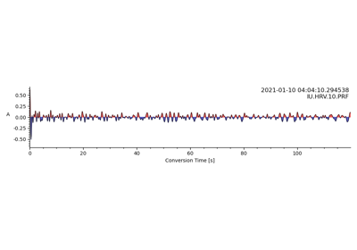
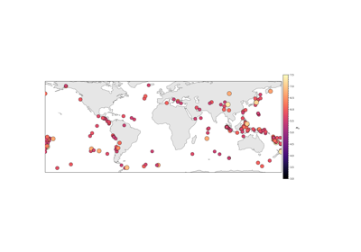
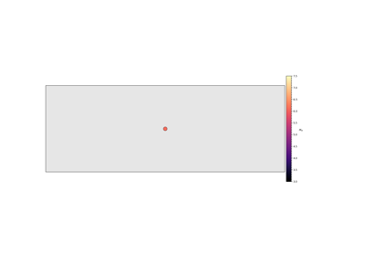

Tutorials#
A set of tutorials to make you familiar with the package.

Common Conversion Point Stack of a Single Station
Common Conversion Point Stack of a Single Station

SAC Database


Import from Local DataBase
A set of tutorials to make you familiar with the package.
Common Conversion Point Stack of a Single Station